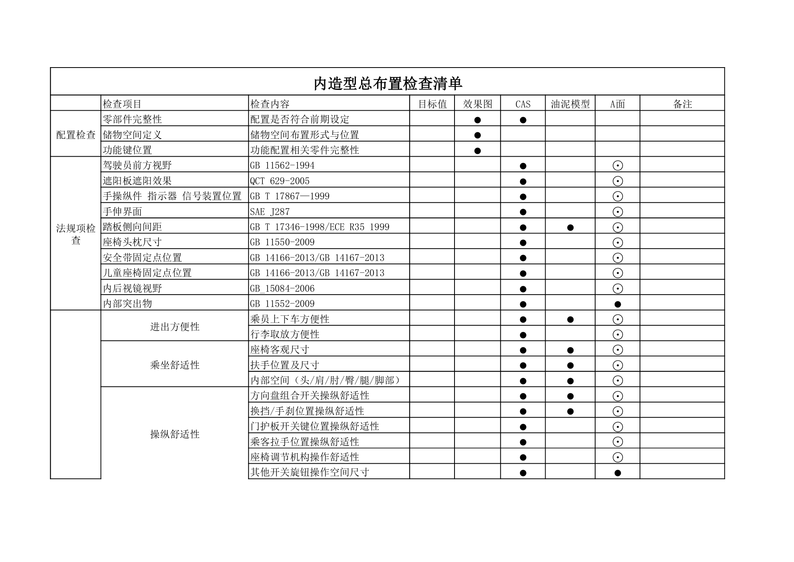
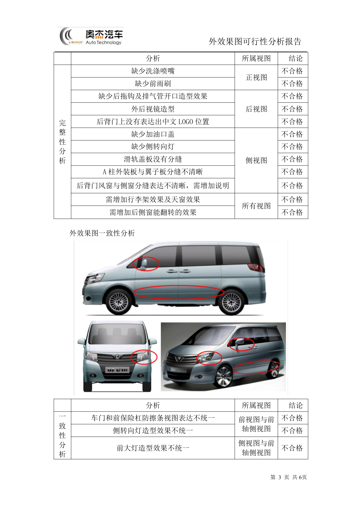

关键里程碑¶
内容来源
本页正文抽取自《总布置》知识库中**可文本解析**的文件：
QCD-A0-005、QCD-A0-006 效果图阶段总布置检查规范、
EDD-A0-005-1 外造型总布置检查清单、EDD-A0-005-2 内造型总布置检查清单、
SJ 41-2009 动力/底盘3D数据评审流程、SJ 4-2008 轿车车门主断面设计流程、
SJ 45-2009 内饰SEG设计指导书、SJ 2-2008 车门设计指导书、
SJ 54-2009 侧碰对应B柱断面系数设定指导书、H20-整车总布置设计硬点报告。
企业规范编号原样保留。
里程碑体系¶
flowchart LR
R["关键里程碑"]
R --> A["造型节点"]
R --> B["数据节点"]
R --> C["验证节点"]
R --> D["门禁判据"]
A --> A1["效果图冻结"]
A --> A2["CAS"]
A --> A3["油泥模型"]
A --> A4["A面"]
B --> B1["草CAS 初版CAS"]
B --> B2["第二版CAS"]
B --> B3["CLASS-A"]
B --> B4["硬点初稿与冻结"]
B --> B5["3D数据评审与交付"]
C --> C1["DMU 间隙干涉校核"]
C --> C2["强度与耐久试验"]
C --> C3["碰撞 CAE 与试验"]
C --> C4["试制 试验 定型"]
D --> D1["四类检查无遗留"]
D --> D2["法规项必有结论"]
D --> D3["整改合格后交付"]概述¶
要点¶
整车开发的关键里程碑分三类，每类都附带一个**放行判据（门禁）**：
| 类别 | 里程碑 | 判据来源 |
|---|---|---|
| 造型节点 | 效果图冻结、CAS、油泥模型、A面 | QCD-A0-006、EDD-A0-005-1/-2 |
| 数据节点 | 各版 CAS、CLASS-A、硬点发布、3D 数据交付 | SJ 41-2009、SJ 45-2009、H20 硬点报告 |
| 验证节点 | DMU 校核、强度/耐久试验、碰撞 CAE 与试验、试制试验定型 | SJ 2-2008、SJ 4-2008、SJ 54-2009 |
门禁的三条通用原则（汇总自各规范）：
| 原则 | 内容 |
|---|---|
| 四类检查无遗留 | 效果图阶段需通过完整性/外廓/内部/主要配置四类检查（QCD-A0-006） |
| 法规项必有结论 | 检查清单中的法规项不得留空，须有明确校核结论（QCD-A0-006、EDD 清单） |
| 整改合格后交付 | 评审发现的问题须填写《整改记录》，合格后方可进行数据交付（SJ 41-2009 §6.3） |
示例¶
内造型总布置检查清单用 ●（完整检查）/ ⊙（局部检查更新） 标记各检查项在四个造型节点上的检查强度，这张矩阵就是"造型节点体系"的可执行版本：

注意事项¶
- 里程碑不是"时间点"而是"状态点"：
EDD清单要求在每个节点都留下"结论 + 图片示意"的证据，节点放行以**证据完整**为准； - 不同企业的阀点命名差异属待补充项：知识库中《福特 GPDS 产品开发流程》等文章为纯图片型，无法提取阀点体系。
造型节点¶
要点¶
（1）四个造型节点与检查强度（EDD-A0-005-1/-2）
| 节点 | 检查定位 | 典型检查项（内造型） |
|---|---|---|
| 效果图 | 造型意图与配置的首次工程校核 | 驾驶员前方视野、手伸界面、内部突出物、乘坐舒适性、进出方便性、行李箱容积 |
| CAS | 三维可行性校核 | 内部突出物、座椅客观尺寸、扶手位置及尺寸、内部空间（头/肩/肘/臀/腿/脚部）、方向盘组合开关与换挡/手刹操纵舒适性 |
| 油泥模型 | 1:1 物理模型验证 | 与 CAS 相近的项目做**局部检查更新** |
| A面 | 最终表面数据的闭环 | 全部检查项做局部更新确认 |
（2）造型冻结前的工程可行性确认（EDD-A0-005 校核过程）
| 步骤 | 内容 |
|---|---|
| 4.1 外效果图质量检查 | 完整性分析（视图完整、功能件无缺失）+ 一致性分析（各视图之间的造型表达是否统一） |
| 4.2 侧视图可行性分析 | 整车尺寸（L103 长、H100 高、L101 轴距、L104 前悬、L105 后悬）、通过性（A106-1 满载接近角、A106-2 满载离去角、A147 通过角、最小离地间隙、台阶保护高度）、人机（上下视野、外开把手离地高度、加油口盖离地高度）、法规功能要求（前机盖距前保距离、护轮板开口大小、前后保险杠低速碰撞）、借用件 |
| 4.3 正视图可行性分析 | 外形尺寸（W103 宽度、W104 后视镜宽度、后视镜伸出量、W101-1 前轮距）、功能法规校核（前牌照板安装空间与上下边缘离地高度、灯具位置法规校核、迎风面积计算）、借用件 |
| 4.4 后视图可行性分析 | W101-2 后轮距、后牌照板、灯具位置法规校核、后背门开口宽度、借用件 |
（3）效果图阶段的总布置检查（QCD-A0-006）
四类检查：完整性（视图完整、车型功能件无缺失）、外廓检查（长/宽/高/轴距/前悬/后悬/轮距/接近角/离去角/最小离地间隙/机舱盖轮廓/前后端离地高度/外部照明装置/号牌板位置/外后视镜宽度）、内部检查（分块合理性、人体布置空间、座椅尺寸、座间距、驾驶员视野、三踏板间距、手操纵件舒适性、方向盘位置及尺寸、仪表板/门护板/顶棚边界）、主要配置（前期提供配置表得到体现）。
示例¶
外效果图的**完整性分析**必须逐项落到视图并给出结论——例如"缺少洗涤喷嘴（正视图）不合格""缺少前雨刷（正视图）不合格""后背门上没有表达出中文 LOGO 位置（后视图）不合格""滑轨盖板没有分缝（侧视图）不合格"，以及**一致性分析**中的"车门和前保险杠防擦条视图表达不统一（前视图与前轴侧视图）不合格""前大灯造型效果不统一（侧视图与前轴侧视图）不合格"。

注意事项¶
- 一致性分析常被忽略：完整性只回答"有没有"，一致性回答"各视图说的是不是同一个东西"，后者是造型内部矛盾的直接暴露点；
- 造型冻结前的工程可行性确认有时间窗：
SJ 40-2009强调 SEG 阶段工程要尽量满足造型，但反馈必须早于油泥与 A 面。
数据节点¶
要点¶
（1）CAS 版本序列（SJ 45-2009 §5）
| 版本 | 作用 |
|---|---|
| 造型草 CAS | 依据配置表与门洞密封面初步完成边界条件，确定内饰功能件区域范围，作为效果图基本限制条件 |
| 初版 CAS | 做结构分块与功能件布置的可行性分析；初步定义间隙、段差、圆角 |
| 第二版 CAS | 油泥模型的数字模型基础；油泥模型开始骨架设计 |
| CLASS-A | 油泥模型评审通过后，以油泥模型为基础开展 |
（2）断面评审节点（SJ 4-2008 §3）
两个评审环节均为"合格 / 不合格"判断，不合格回到设计修改：
| 节点 | 通过条件 |
|---|---|
| 新车型主断面评审 | 评审报告判定合格 |
| 三维结构设计评审 | 评审报告判定合格 → 形成最终三维结构设计数模 → 主断面完善 → 最终主断面 |
（3）3D 数据评审与交付（SJ 41-2009 §5、§6）
| 项目 | 要求 |
|---|---|
| 评审准备文件 | 7 类：评审报告 PPT（提前三天完成）、3D 数据自检表（三级签字）、系统配接单、管线布置校核报告、动态检查报告、3D 数据整改开闭项清单、设计和开发评审申请表 |
| 时间要求 | 确定评审日期后**提前三天**将准备内容放到指定服务器 |
| 评审会议 | 项目负责人介绍评审报告；各检查报告负责人介绍检查内容及**整改结果**；安排专人记录专家问题并填写《评审报告》 |
| 会后 | 专人整理问题填写《整改记录》；**合格后**进行数据交付 |
（4）硬点发布节点（H20 硬点报告）
硬点报告的发布节奏是 "初稿 → 项目完成冻结时正式发布"，中间版本必须可追溯。
示例¶
3D 数据交付的前置条件不是"数据做完"，而是"检查做完 + 整改闭环"：SJ 41-2009 用 5 类检查文件（自检表、配接单、管线布置校核报告、动态检查报告、整改开闭项清单）构成交付前的体系性检查。
注意事项¶
- 数据质量与完整性检查的判定依据是"文件"而非"口头确认"：自检表需**纸版三级签字**（设计人员自检 / 主管领导校对 / 部门领导审核），电子版汇总存放服务器；
- 配接单是跨专业接口的确认书：它保证数据交付时**相邻专业接口已确认**，而不只是本专业数据齐全。
验证节点¶
要点¶
（1）结构强度与耐久（SJ 2-2008 §5.2，以车门为例）
| 验证项 | 判据 |
|---|---|
| 过行程强度 | 250 N：下沉 ≤ 1.0 mm；250 N：开启方向角度变形 ≤ 10°；290 N：与各部件无干涉；450 N：不发生龟裂、破断 |
| 向下加载负荷强度 | 500 N：向下位移 ≤ 10 mm，残留位移（永久变形）≤ 1.0 mm |
| 全力关门强度 | 全开状态下全力关闭，外板/玻璃/车锁及其他部位不能龟裂、破断 |
| 开合耐久强度 | 白车身或涂装后车身上实施 **5 万次**反复开合：无影响性能与外观质量的裂纹、磨损、变形、干涉、螺栓松动；无破坏涂装质量、脱落、扭曲 |
（2）CAE 验证（SJ 2-2008 §4.4.2、SJ 4-2008 §3）
| 类型 | 内容 |
|---|---|
| 结构 CAE | 车门刚度分析、模态分析、门下垂分析、碰撞分析（与整车一起）、抗凹性分析 |
| 刚度分析（标杆车） | 整体扭转/弯曲刚度、车身接头部位刚度、车门门洞部位刚度；各关键断面的封闭面积与转动惯量系数 |
| 碰撞 CAE | 正碰、侧碰、追尾碰撞、低速正碰、翻滚压顶 |
（3）碰撞验证与目标星级（SJ 54-2009）
| 项目 | 内容 |
|---|---|
| 侧碰试验条件 | 可变形移动障碍壁（MDB），950 kg，50 km/h，撞击角 90°，假人 EuroSID-1 或 EuroSID-2（GB 20071-2006 / ECE R95） |
| 断面系数校核 | 概念设计阶段即计算 B 柱各位置最小断面系数，要求实测断面系数位于**要求线右侧** |
| 对标结论 | 丰田 COROLLA 因断面系数远高于 GB 20071-2006 最低要求（预留了对应美国 NAS 标准等的安全余量），在 C-NCAP 取得侧碰 16 分满分、整车 5 星 |
（4）试制、试验、定型（SJ 2-2008 §3.6～3.8、§4.5）
| 阶段 | 工作 |
|---|---|
| 试制 | 对试制中出现的问题整理分析，对已暴露的设计缺陷与不完善之处进行改进 |
| 试验 | 对试验过程中出现的问题整理分析，对属于设计缺陷之处进行改进 |
| 定型 | 对试生产过程中出现的问题整理分析并改进，将设计定型；同时编制相关部分的**维修手册、使用手册**等产品文件 |
示例¶
验证节点的"闭环"含义是：CAE → 试验 → 问题清单 → 设计更改 → 复算。SJ 2-2008 §4.5 明确该阶段要"归纳总结过程中出现的问题 → 对问题进行分析整理 → 对设计问题进行研究分析提供解决方案 → 更改相关设计文件完善设计 → 编制维修手册与使用手册等产品文件"。
注意事项¶
- 验证问题整改闭环：与数据评审一致，问题必须**形成记录并跟踪关闭**，
SJ 41-2009的"整改开闭项清单"就是这个机制的实例； - 目标星级要预留余量：
SJ 54-2009的 COROLLA 案例说明"法规合格 ≠ 五星"——若项目目标为五星，应在概念阶段就按更高标准预留断面系数与结构余量； - 骡子车/样车等验证节点属待人工补充项：知识库已解析条款覆盖的是**零部件级**验证（强度、耐久、CAE）， 未见整车级的骡子车（Mule）、工程样车、试生产车节点的定义与判据。
待人工补充¶
本页待人工补充清单
- 整车级验证节点：骡子车（Mule）、工程样车、试生产车的定义与放行判据；
- 主机厂阀点体系（PEP / GVDP 等）的节点名称与对应关系；
- DMU 数据检查的间隙设定值：对应
AEM-A0-009 DMU数据检查手册、AEM-A0-011 DMU数据间隙设定规范， 因读取问题**未采用**； EDD-A0-006 内效果图可行性分析报告（12 页，已下载）的校核步骤尚未逐条展开；- 造型冻结的正式签署流程：已解析条款描述了检查与评审，但未见签署与冻结管理的规定；
- 知识库中以下文件虽相关但因读取问题**未采用**：
AEM-A0-002 设计任务书、AEM-A0-005 概念草图阶段总布置工作手册。
建议：在 IMA 客户端中打开对应文件补充条款，或按"规范编号 + 页码"方式人工引用。